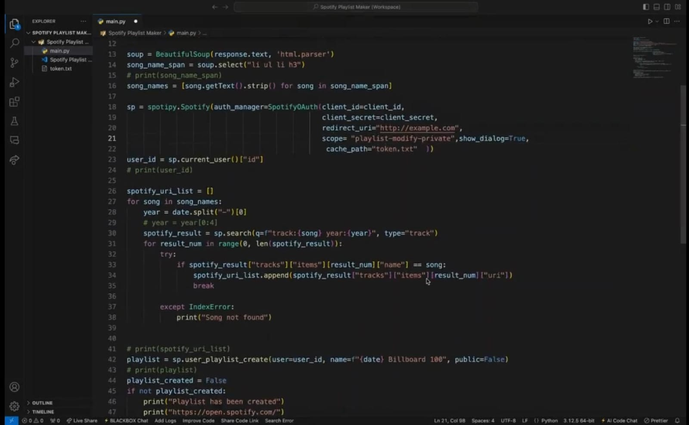
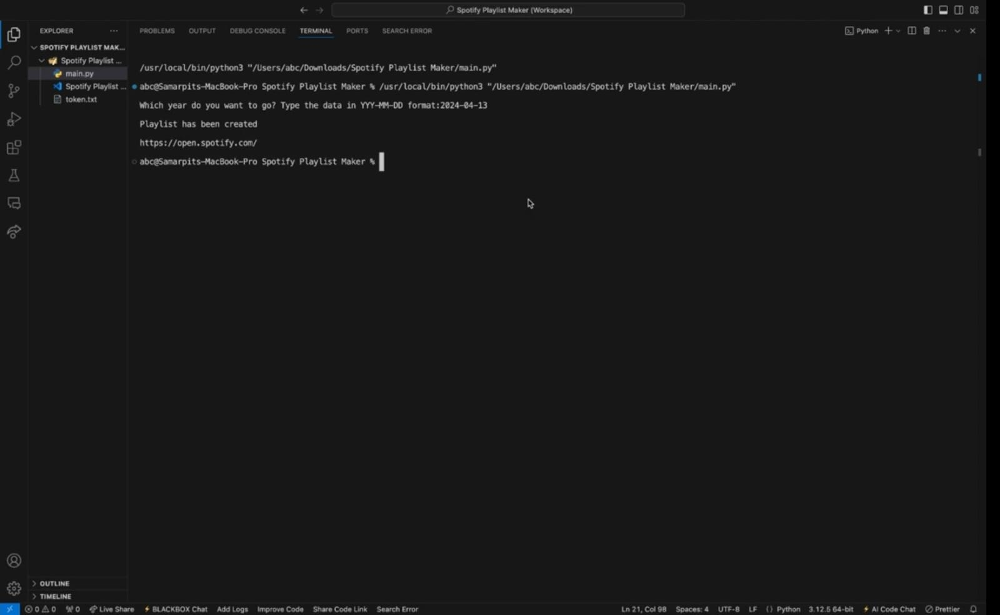
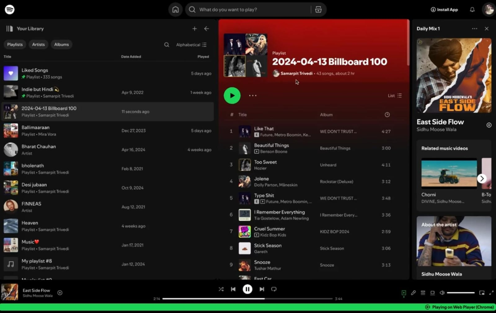

Concept
Historical music discovery through automation.
The tool takes a single date, fetches Billboard Hot 100 chart data for that day, matches tracks on Spotify, and creates a playlist automatically.
A Python project that turns a chosen date into a Spotify playlist by pulling Billboard's Top 100 songs and recreating that moment in music automatically.

The tool takes a single date, fetches Billboard Hot 100 chart data for that day, matches tracks on Spotify, and creates a playlist automatically.
The early process involved collecting songs manually. The final version automates chart retrieval, Spotify authentication, playlist creation, and track insertion end to end.



Open the public project presentation to see the generator demonstrated.
Open PresentationReturn to the main site and explore the rest of the analytics and Python work.
Back to Portfolio